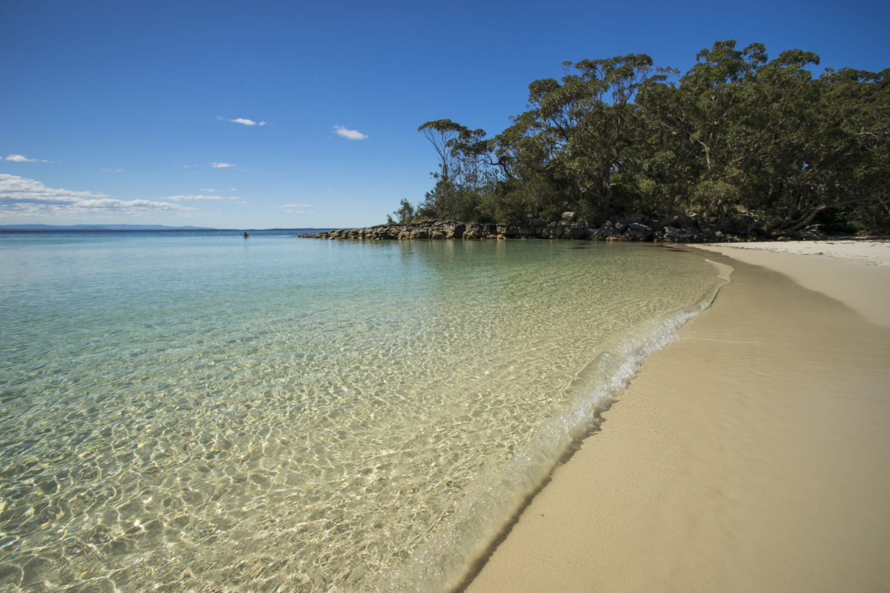
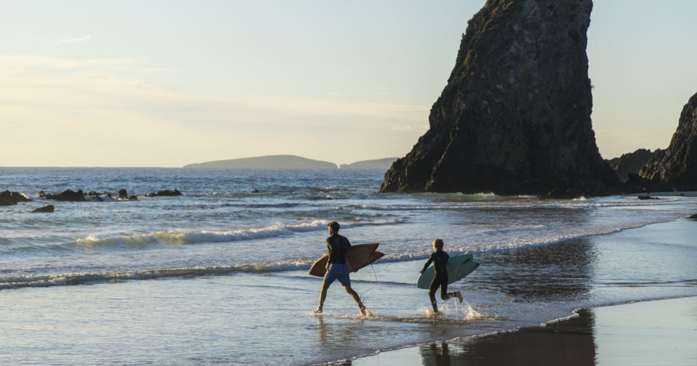

Sydney is Australia’s largest and most famous city. Think of the World Heritage-listed Sydney Opera
House and its ingenious shape, like billowing white sails, and the impressive steel arch of the
Harbour Bridge. The blue waters of the harbour and the white sands and curling waves of Bondi Beach
will also come to mind.
These beautiful images inspire people from all over the world to visit Sydney. Once here, they
discover so much more to see and do. This beautiful cosmopolitan city celebrates its cultural
diversity and heritage, and passion for arts and sports.
A temperate climate makes Sydney spectacular at any time of the year. Walk in pretty parks and
gardens, stroll along beaches, and marvel at Australia’s unique native animals and marine life at
Taronga Zoo and SEA LIFE Sydney Aquarium year round.
Start imaginating
your new journey
around Sydney
your new journey
around Sydney

Aboriginal people have a long connection with Sydney, dating back at least 50,000 years before the
arrival of the First Fleet in 1788, and cruises, walking tours, museums and art galleries introduce
visitors to Aboriginal culture and traditions.
Beyond Sydney there are many great destinations to explore in regional NSW, from some of the world’s
best surfing beaches and national parks to wonderful wine regions. The World Heritage-listed Blue
Mountains are two hours from the city centre by train.
